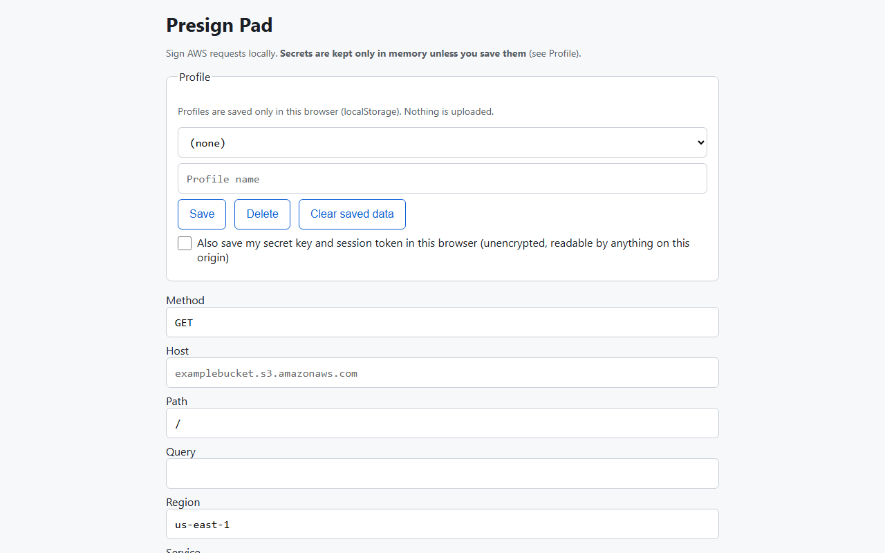

Presign Pad is a small browser tool for AWS SigV4 requests and S3 presigned URLs. Paste the error XML from a failed request and see exactly which line differs from what the tool computed.
Runs in your browser. No account. Your keys stay on your machine.

A full API client is too much.
Then you get a vague 403 and have to guess.
A bad header, region or timestamp breaks them.
You don't want to paste your AWS keys into a tool that syncs them to a cloud workspace.
Sign requests with SigV4 and create S3 presigned URLs.
Paste a SignatureDoesNotMatch error XML and see a line-by-line diff against the canonical request and string to sign the tool computed.
Get a plain-words cause for AccessDenied, ExpiredToken, RequestTimeTooSkewed, AuthorizationQueryParametersError and ExpiredRequest.
Inspect any presigned URL: credential scope, date, expiry, time left, signed headers and warnings. Add your secret to check if the signature matches.
The secret is saved only if you tick a box.
Copy a signed request as a curl command, or as an AWS CLI presign command for S3 GET URLs.
Simple, no surprises.
$0/month
$5/month
$48/year
No. There is no login and no cloud sync. Presign Pad runs in your browser.
Nowhere. The signing and explaining code makes no network calls. Your secret stays in memory unless you tick the box to save it in your browser's local storage. A warning shows when you do.
Free covers SigV4 signing and S3 presigned URLs. Pro adds the failure explainer, the presigned URL inspector, saved profiles and curl or AWS CLI export. Pro Yearly has the same features, billed once a year.
AWS SigV4 requests and S3 presigned URLs. It does not sign for other clouds, and it does not do SigV4a.
No. It does one job: sign AWS requests and explain why they fail. It has no collections, environments, scripting or team features.
The README lists manual steps to compare the signature with the AWS CLI. We suggest you run them before you rely on it.